CADASTRO
INTRODUÇÃO
Neon Genesis Evangelion é uma aclamada série de anime criada por Hideaki Anno e produzida pelo estúdio Gainax. Ambientada na futurista cidade de Tóquio-3 quinze anos após um cataclismo global conhecido como "Segundo Impacto", a história acompanha a humanidade em sua luta contra criaturas gigantescas conhecidas como "Anjos". Para enfrentá-los, a organização NERV desenvolveu as Unidades Evangelion (EVAs), bio-mechas gigantes controlados por adolescentes através de uma ligação neural profunda.
PERSONAGENS
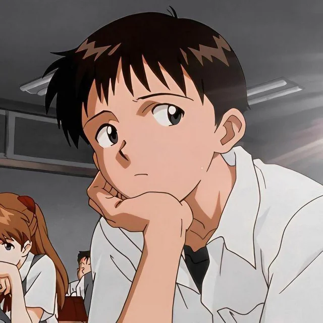
SHINJI IKARI
A Terceira Criança e piloto da Unidade EVA-01. Shinji é um garoto introvertido e traumatizado pela rejeição do pai, sendo forçado a carregar a responsabilidade de salvar a humanidade enquanto luta contra sua própria depressão e dilemas existenciais.
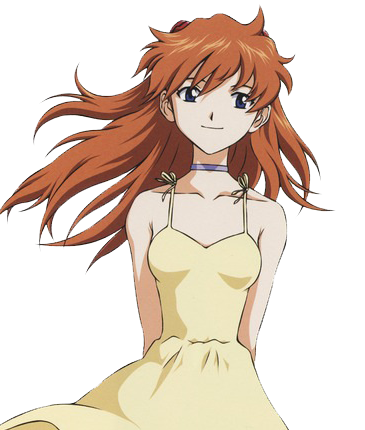
ASUKA LANGLEY SORYU
A Segunda Criança e piloto da Unidade EVA-02. Nascida na Alemanha, Asuka é extremamente orgulhosa, competitiva e impulsiva, usando uma fachada de superioridade para esconder traumas de infância e uma profunda necessidade de validação.
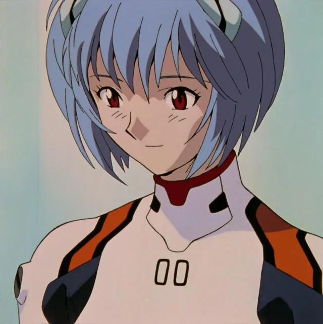
REI AYANAMI
A Primeira Criança e piloto da Unidade EVA-00. Rei é uma garota enigmática, inexpressiva e distante de emoções humanas normais. Seu passado guarda um dos segredos centrais da NERV e do Projeto de Instrumentalização Humana.
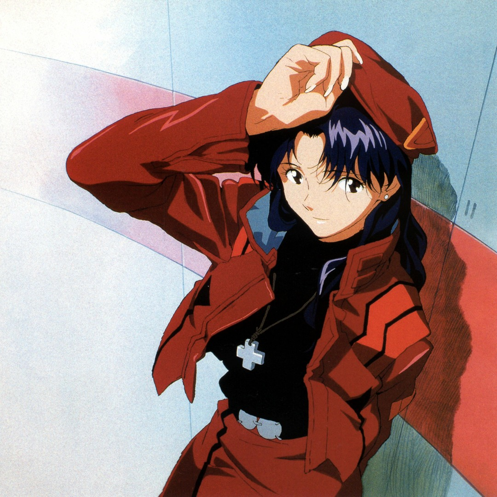
MISATO KATSURAGI
A Capitã (e posterior Major) de Operações Táticas da NERV e guardiã legal de Shinji e Asuka. Apesar de sua atitude extroversa em casa, é uma estrategista brilhante e determinada a destruir os Anjos para vingar a morte de seu pai.
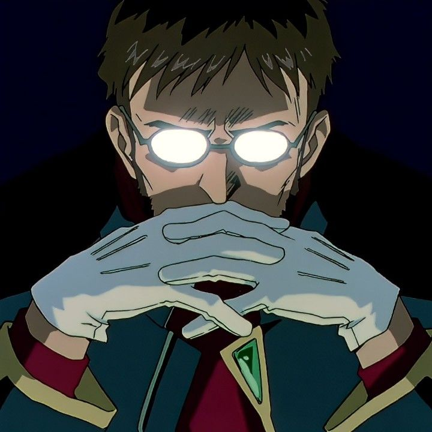
GENDO IKARI
O Comandante da NERV e pai frio de Shinji. Focado obsessivamente na realização do Projeto de Instrumentalização Humana, Gendo manipula aliados e inimigos com o único objetivo de se reencontrar com sua falecida esposa, Yui.
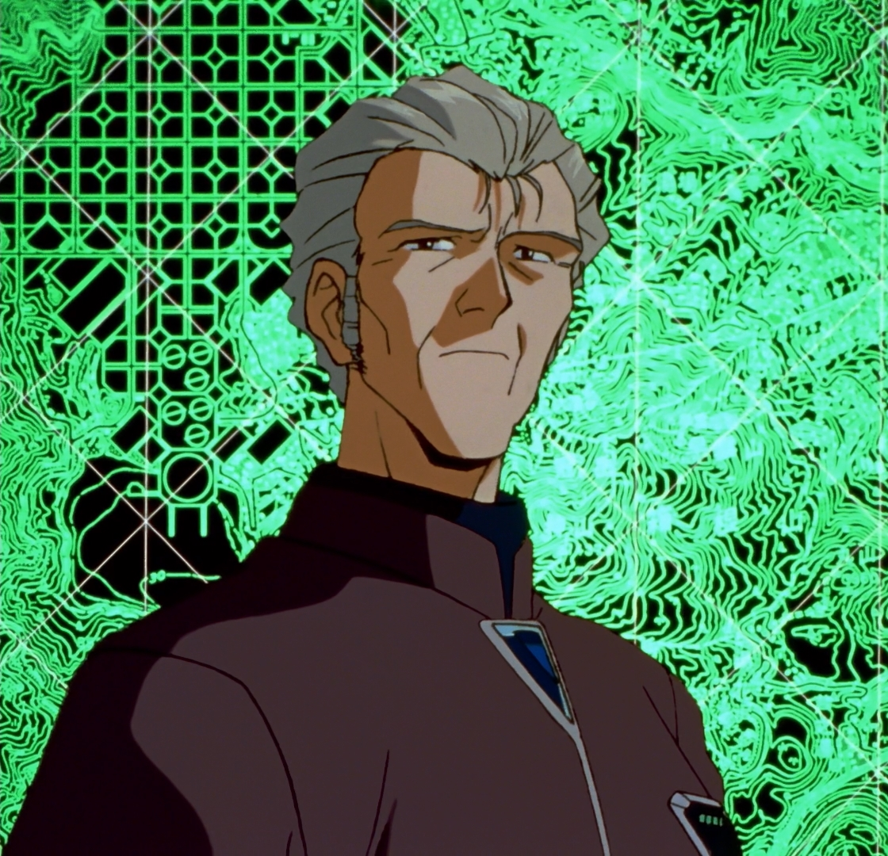
KOZO FUYUTSUKI
O Vice-Comandante da NERV e braço direito de Gendo Ikari. Antigo professor universitário de Yui e Gendo, Fuyutsuki atua como a voz da razão na organização e conhece profundamente a verdade por trás dos objetivos secretos da SEELE.
EVAS
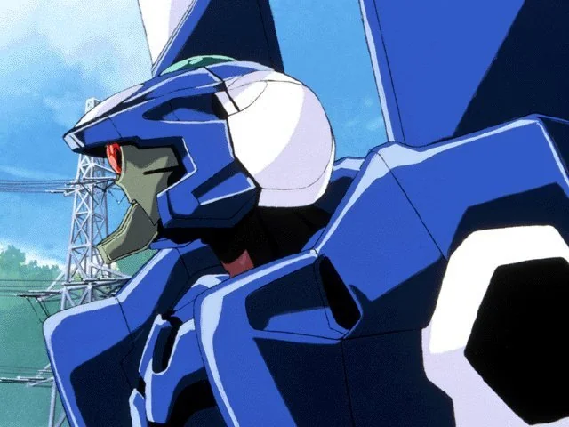
EVA 00
O protótipo da linha Evangelion, pilotado por Rei Ayanami. Por ser o modelo inicial de testes, o EVA-00 é instável e sofreu vários episódios de descontrole violento durante seus primeiros testes.
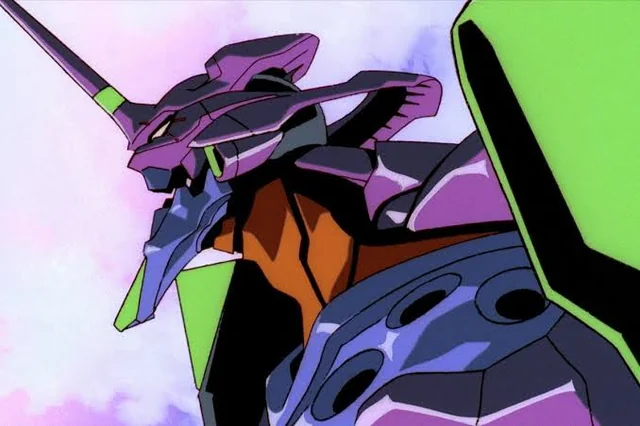
EVA 01
O modelo de teste de tipo único, pilotado por Shinji Ikari. Criado a partir do Anjo Lilith, o EVA-01 possui um papel profético central no Terceiro Impacto e exibe uma tendência assustadora de entrar em estado "Berserk" para proteger seu piloto.
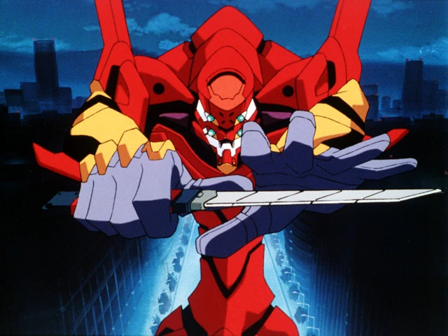
EVA 02
O primeiro modelo de produção em massa concebido especificamente para combate, pilotado por Asuka Langley. Projetado para otimizar o uso do campo A.T. e armas táticas, representa o ápice da engenharia militar da NERV na Europa.
CLASSICO
A era clássica abrange a série original exibida na TV em 1995 com 26 episódios e o épico filme cinematográfico "The End of Evangelion" (1997). Essa fase revolucionou a indústria dos animes ao misturar ficção científica mecha com simbolismo religioso, psicanálise freudiana e exploração profunda de depressão e alienação, culminating em um dos finais mais icônicos da história da animação japonesa.
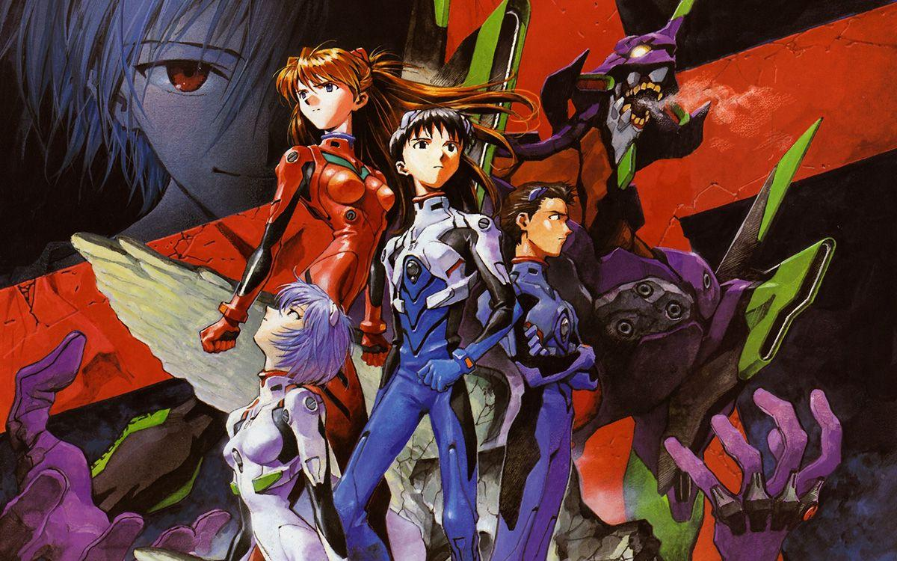
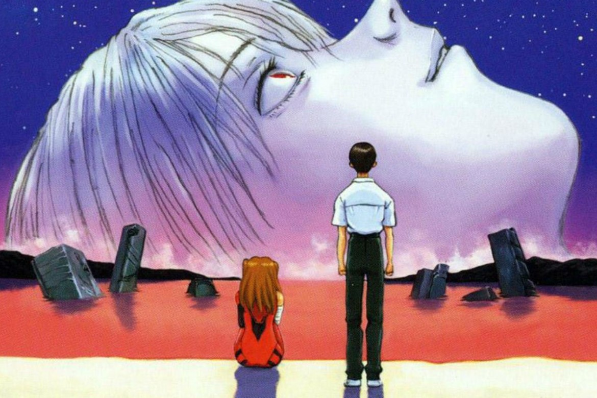
REBUILD
Lançada entre 2007 e 2021, a tetralogia cinematográfica "Rebuild of Evangelion" (1.0, 2.0, 3.0 e 3.0+1.0) reimagina a franquia com gráficos modernos e novos rumos na narrativa. Introduzindo novas personagens como Mari Illustrious Makinami, alterações no enredo e uma conclusão definitiva por Hideaki Anno, a quadrilogia encerra o ciclo de Evangelion com uma mensagem de esperança e superação.
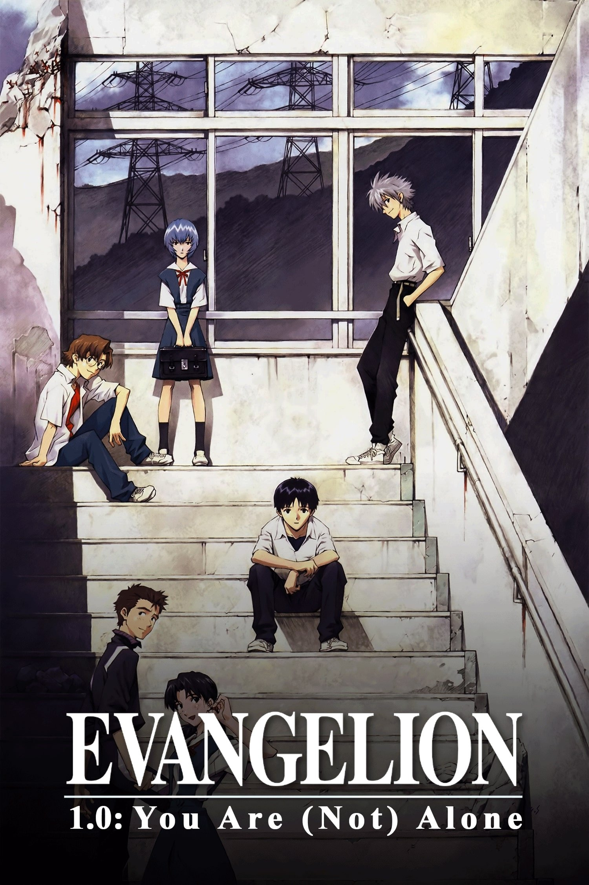
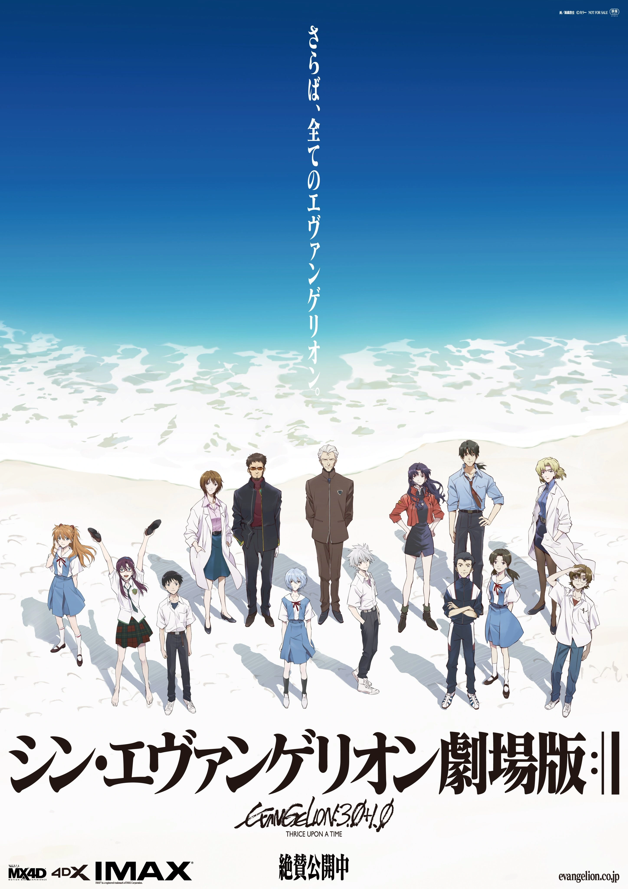